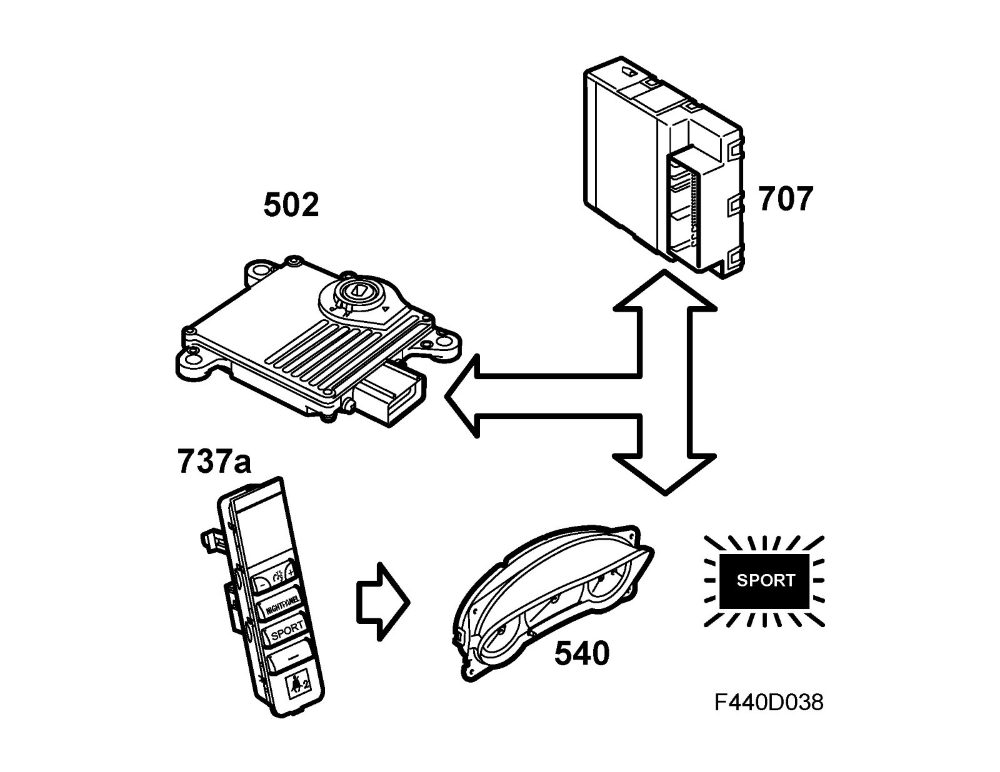

SPORT Gearchange Program
SPORT gearchange program
A spring return button on Switch panel (737a) makes it possible to switch between the NORMAL and the SPORT gearchange program. The switch is connected to the pin 23 of the BCM control module (707) and to grounding point G40. The control module feeds out B+ on pin 23. When the button is pressed in, the circuit is closed to ground and there is a switch between the two gearchange programs.
BCM (707) transmits information on the current gearchange program on the bus - SPORT program ON/OFF (used by MIU (540) and TCM (502)). When SPORT is active, bus information "SPORT ON" is transmitted. In this mode, the shifting pattern is change, with upshifts at a higher rpm and downshifts at a lower rpm.
The SPORT indicator lamp is illuminated by the main instrument unit when the SPORT program is activated. If M mode is selected when SPORT is active (in D), "SPORT" disappears from MIU. The SPORT function is always active in M mode, but the text is not shown in MIU.
SPORT can be activated in gear positions N and D.
The NORMAL program is always active upon start-up.
The SPORT program is deactivated:
- if the switch is actuated again
- if the gear selector is moved to P or R
- if the ignition key is turned to OFF
- if the vehicle is in limp-home mode